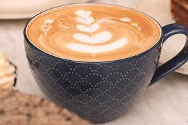
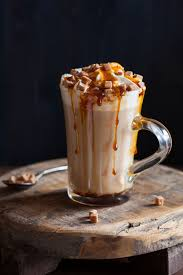

Cafe de Especialidad!
El café de especialidad es aquel de altísima calidad que obtiene una puntuación superior a 80 puntos sobre 100 en una cata profesional, evaluada por la Specialty Coffee Association (SCA). Se caracteriza por su trazabilidad total (se conoce su origen exacto), ausencia de defectos, sabor excepcional y cultivo sostenible.
Flat Wait

El flat white es una bebida de café espresso con leche, originaria de Australia/Nueva Zelanda (años 80), caracterizada por su sabor intenso y textura sedosa. Combina un doble espresso con leche vaporizada, resultando en una capa fina de microespuma (menos de 0,5 cm) y una proporción de café más alta que la leche.
Latte Caramel

El latte caramel es una bebida de café suave y cremosa que combina espresso, leche vaporizada y jarabe o salsa de caramelo, ofreciendo un equilibrio perfecto entre la intensidad del café y un dulzor reconfortante. Se caracteriza por su textura sedosa, coronado a menudo con espuma de leche y caramelo extra.
Americano Cortado

El café americano cortado es una bebida híbrida que consiste en un espresso diluido con agua caliente (americano) al que se le añade una pequeña cantidad de leche caliente para suavizar su intensidad. Combina la textura ligera y mayor volumen del americano con el toque cremoso y la reducción de acidez del cortado tradicional.